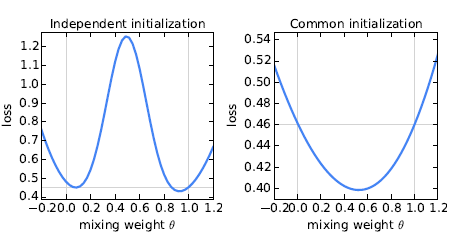
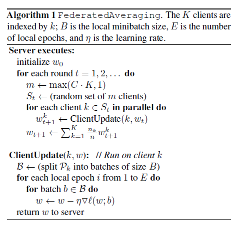

联邦学习入门（Federated Learning）
联邦学习算是我接触到的一个比较新的方向，由于各种莫名其妙的原因，在大学的时候一直抵触接触Machine Learning、Deep Learning。所以在上一周（摸鱼中）看了很多吴恩达老师的视频进行学习，不过总时长也太长了，很怀疑自己有没有耐心看下去。这一周先从Federated Learning的白皮书看起。
Communication-Efficient Learning of Deep Networks from Decentralized Data
这篇文章是2016年由谷歌实验室提出的，联邦学习算是分布式学习的一种，
首先看看他的摘要
Abstract
现代移动设备可以访问适合于学习模型的大量数据，从而可以极大地改善设备上的用户体验。 例如，语言模型可以改善语音识别和文本输入，图像模型可以自动选择优质照片。
但是，这种丰富的数据通常对隐私敏感，数量大或两者兼而有之，这可能会阻止登录到数据中心并使用常规方法进行培训。 我们提倡一种替代方法，将训练数据保留在移动设备上，并通过汇总本地计算的更新来学习共享模型。 我们将这种分散式方法称为联邦学习。
我们提出了一种基于迭代模型平均的深度网络联合学习的实用方法，并考虑了五个不同的模型架构和四个数据集，进行了广泛的经验评估。 这些实验表明，该方法对于不平衡和非IID（独立同分布）数据分布是稳健的，该分布是此设置的定义特征。 通信成本是主要的约束条件，与同步随机梯度下降相比，我们显示要求的通信回合减少了10–100。
通过文章中的总结，联邦优化有以下几个关键的属性：
$\bullet$ Non-IID( Non-independent and identically distributed )：分散各个设备端的数据集因为用户的特异性而存在较大的差异；
$\bullet$ Unbalanced：因为用户对于服务端的访问频率差异，使得各个设备端训练数据量存在不同；
$\bullet$ Massively distributed：设备端数量远远大于设备端训练模型的数量；
$\bullet$ Limited communication：因为网络等原因，使得设备端访问连接受到限制
只选择一部分的client来提高效率，实验表明，挑选超过特定值的client数量会降低效率。然后，每个选定的client基于全局状态和本地的数据库执行本地的计算，并且发送更新给服务器。
当我们关注非凸神经网络目标是，我们考虑的算法适用于以下形式的任何有限和的目标。
$\min_{w\in \mathbb{R}^d} f(w)$ 其中$f(w)\overset{def}{=} \frac{1}{n}\sum^{n}_{i=1}f_i(w) $。
对于一个机器学习的问题，我们通常会设置$f_i(w)= \ell(x_i,y_i,w) $，即样本数据$(x_i.y_i)$以及参数$w$。假设有$K$个用户数据分区，那么用$P_k$表示$k$用户的数据点索引的集合，令$n_k=|P_{k}|$，因此，上述的模型可以表示为
$f(w)=\sum_{k=1}^{K} \frac{n_k}{n}F_k(w) x$其中，$F_k(w)=\frac{1}{n_k}\sum_{i\in P_{k}}f_i(w)$
因为$F_k(w)$是IID（独立同分布）。那么显然：
$$
E_{P_k}[F_k(w)]=f(w)
$$
独立同分布假设通常通过由分布式优化算法得出；
联邦平均算法
近年来，深度学习的大量成功应用几乎完全依赖于随机梯度下降（SGD）的变体来进行优化； 实际上，许多进步可以理解为通过简单的基于梯度的方法使模型的结构（以及损失函数）更易于优化[16]。所以，自然而然的，我们从建立从SGD开始的联邦优化算法。
SGD可以简单的应用于联邦优化问题，在此问题中，每轮通信都执行一次批次梯度计算（例如在随机选择的client上）。这种方法的计算效率很高，但需要进行大量轮训才能生成好的模型（例如，即使使用批量归一化等高级方法，Ioffe和Szegedy [21]训练的MNIST在大小为60的小型批次上也可以进行50000步）。 我们在CIFAR-10实验中考虑了这个基线。
在联邦环境中，挂钟时间花费很少的钱来吸引更多的客户，因此对于我们的基线，我们使用大批量同步SGD； Chen等人的实验。[8]展示了这种方法在数据中心环境中是最新技术，其性能优于异步方法。 为了在联邦环境中应用此方法，我们在每个回合中选择一个client分区，然后计算这些client所拥有的所有数据的损失梯度。 因此，C控制全局批处理大小，其中C = 1对应于全批（非随机）梯度下降。2我们将此基准算法称为FederatedSGD（或FedSGD）。
一个典型的具有$C=1$并且固定的学习率$\eta$的$FedSGD$实现是每个client计算$g_k =\nabla F_k(w_t)$，本地数据在当前模型$w_t$的平均梯度，中央服务器聚合这些梯度并应用更新$w_{t+1}\leftarrow w_t \leftarrow \eta \sum_{k=1}^K \frac{n_k}{n}g_k$,因为$\sum_{k=1}^K \frac{n_k}{n}g_k=\nabla f(w_t)$。等效更新为$\forall k,w_{i+1}^k \leftarrow w_t \leftarrow \eta g_k ,$然后$w_{t+1}\leftarrow \sum_{k=1}^K \frac{n_k}{n}w_{t+1}^k.$也就是说，每个client使用其本地数据在本地对当前模型进行梯度下降的一步，然后服务器对所得模型进行加权平均。一旦以这种方式编写了算法，我们就可以通过在平均步骤之前多次迭代本地更新$w^k\leftarrow w^k \leftarrow \eta\nabla F_k(w^k)$来为每个client添加更多计算。我们称这种方法为FederatedAveraging（或FedAvg）。计算量受到三个关键参数的控制，$C$,每轮执行计算的client的比例。$E$,每个client在每个回合中对其本地数据集进行的训练的次数。$B$，用于client更新的本地最小batch大小。我们写$B=\infin$表示整个本地数据集被视为单个小batch。因此，因此，在该算法族的一个端点，我们可以取$B = \infin$和$E = 1$，这恰好对应于$FedSGD$.对于有$n_k$个本地样本的client，每轮本地更新的数量由$u_k=E\frac{n_k}{B}$给出。在算法1中给出了完整的伪代码
对于一般的非凸目标，参数空间中的平均模型可能会产生任意不良的模型。

